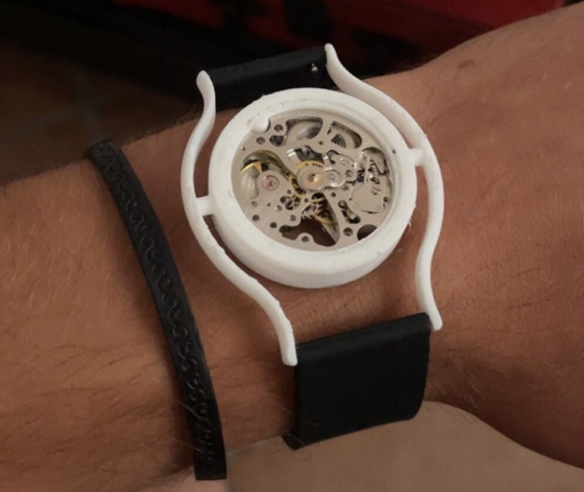

Reductionist watch design.
Product Design
Jul 2023 - ...
Designed and manufactured a watch to challenge industry convetions through a reductionist design approach. Product was specified to be simple, stylish, light and versastile.
Initial prototype was machined from Aluminium (Al6063) using a lathe, milling machine and standard hand tools with a build time of approximately 10hrs. Subsequent iterations are to be SLM printed and hand polished to a 0.8 Ra surface finish to reduce production time and cost.
Future challenges include, desgning for mass production, branding, packaging and marketing. Targeting a marketable consumer product by the end of 2023. Follow this page for updates.